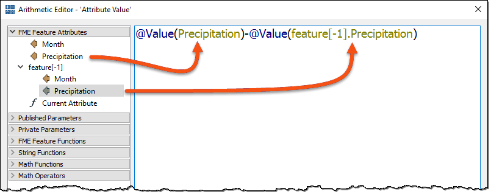
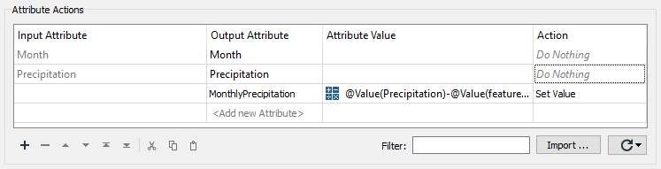

After completing this lesson, you’ll be able to:
You're working on a project mapping the city's monthly precipitation (rainfall). You have been given a dataset like this:
| Month | Precipitation |
|---|---|
| Jan | 168 |
| Feb | 273 |
| Mar | 387 |
| Apr | 476 |
| May | 541 |
| Jun | 595 |
| Jul | 631 |
| Aug | 668 |
| Sep | 719 |
| Oct | 840 |
| Nov | 1029 |
| Dec | 1191 |
Unfortunately, the numbers are cumulative, and you wanted to map individual figures for each month. Rather than reaching into your desk drawer for a calculator, you decide to use FME to do the calculations!
Open FME Workbench (2023.2 or later). Create a new workspace to translate the data as follows:
| Reader Format | Microsoft Excel |
| Reader Dataset | https://s3.amazonaws.com/FMEData/FMEData/Data/ElevationModel/Precipitation.xlsx C:\FMEData\Data\ElevationModel\Precipitation.xlsx |
| Writer Format | Microsoft Excel |
| Writer Dataset | C:\FMEData\Output\Training\MonthlyPrecipitation.xlsx |
| Writer Parameters > Overwrite Existing File | Enabled |
| Writer Sheet Definition | Copy from Reader... |
When creating the workspace, check the Parameters for the reader to ensure FME recognizes the headers at the top of each column.
To calculate precipitation for any given month, you need to subtract the previous month's cumulative total from the current month's cumulative total.
With FME, you can use the adjacent feature attribute functionality to fetch the previous month's number.
So, place an AttributeManager transformer between the reader and writer feature types:
Inspect the AttributeManager's parameters.
Click the arrow next to Advanced: Attribute Value Handling to expand the options. Check the box marked Enable Adjacent Feature Attributes. In the fields provided, enter "1" for the Number of Prior Features to keep.
Next, set the parameter Substitute Missing, Null and Empty by to "Default Value" and enter "0" into the Default Value field:

The substitution parameter is important because the first feature to be processed can’t have a prior feature, and the last feature to be processed can't have a subsequent one. Therefore, you must always be careful about what you set here.
In this exercise, we’re calculating a numeric value; therefore, using 0 (zero) as the default replacement makes sense.
Now, let's calculate the new precipitation value.
In the Attribute Value field for the Precipitation attribute, click the drop-down arrow and click Open Arithmetic Editor:

In the Arithmetic Editor, use the menu on the left to select:
PrecipitationPrecipitation for feature[-1]All of which should leave you with an expression looking like this:
@Value(Precipitation)-@Value(feature[-1].Precipitation)

If you don't see the
feature[-1]options under FME Feature Attributes, ensure you have followed the previous step, then try clicking OK twice to close the AttributeManager, and then open it again.
Now you can see why it was so important to set the substitution field, because it’s uncertain what result would occur from the above when feature[-1].Precipitation is missing!
Click OK to close the Arithmetic Editor, and then accept the parameter changes.
Save the workspace and then run it. Inspect the output.
The numbers start out looking correct but quickly become incorrect. Not even in Vancouver does it rain 623 mm in a single month!
The problem is this: unlike other occasions in FME, we can’t simply overwrite the attribute we are working with here. That’s because it skews the following calculation. i.e., the calculation for March needs to operate on February's original number, but instead, it receives the value we've just overwritten it with!
The only way to solve this is by creating a new attribute.
Edit the writer schema by renaming the destination attribute Precipitation to MonthlyPrecipitation in the writer feature type's User Attributes tab:

Now, return to the AttributeManager and change it to create an entirely new attribute called MonthlyPrecipitation. You can copy and paste the Value formula to save time (copy the cell itself, not the entire row). Change the Output Attribute name, and ensure Action is set to "Set Value":

It's a pain to do, but blame me for leading you in the wrong direction at first! You can't even just rename Precipitation to MonthlyPrecipitation since, whatever you call it, it still fetches an incorrect value. You must reset its Action field to "Do Nothing" and create a new attribute.
Save the workspace.
Before re-running the workspace, make sure the file you are writing to is not already open in Excel (or any other editor).
Re-run the workspace.
Inspect the output. This time, the numbers should be correct:

If the output values are "273-168", "387-273", etc., then you've used the Text Editor and not the Arithmetic Editor! If the values are all zero, you must ensure the AttributeManager action is set to Do Nothing for the
Precipitationattribute rather than Set Value.